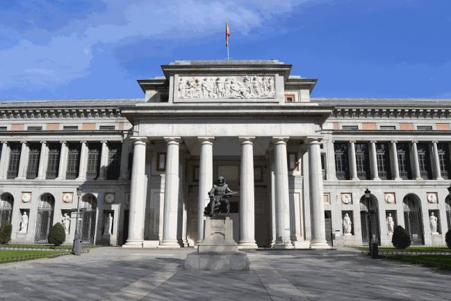
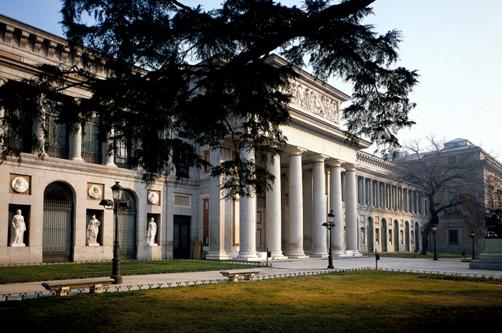
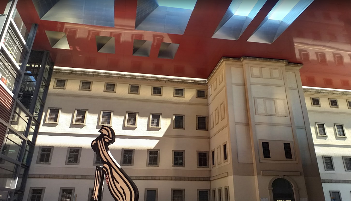
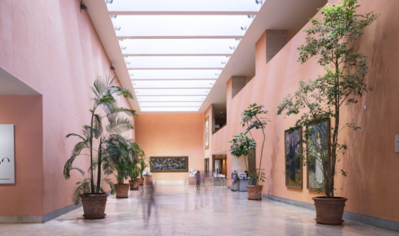
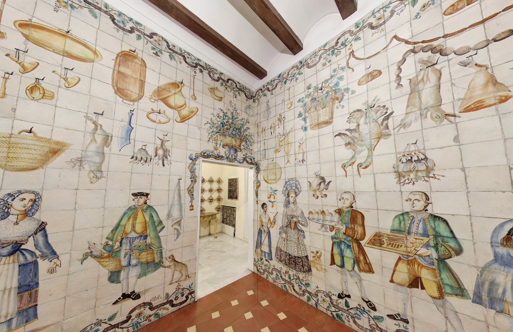

El Museo del Prado, oficialmente Museo Nacional del Prado, es uno de los más sobresalientes del mundo,y también figura entre los más visitados (el decimoctavo en 2013 entre los dedicados al arte).Con sede en Madrid, España, está asimismo considerada la institución cultural más importante del país, según el Observatorio de la Cultura de 2020, estudio realizado entre varios centenares de profesionales del sector.
Singularmente rico en cuadros de maestros españoles y de varias escuelas pictóricas del resto de Europa entre los siglos XV y XVIII, y españoles del XIX, según manifestó el historiador del arte e hispanista Jonathan Brown «pocos se atreverían a poner en duda que es el museo más importante del mundo en pintura europea». Su principal atractivo radica en la amplia presencia de Velázquez, el Greco, Goya (el artista más extensamente representado en el museo),Tiziano, Rubens y el Bosco, de los que posee las mejores y más extensas colecciones que existen a nivel mundial,a lo que hay que sumar destacados conjuntos de autores tan importantes como Murillo, Ribera, Zurbarán, Paret, Fra Angelico, Rafael, Veronese, Tintoretto, Durero, Patinir, Antonio Moro, Van Dyck o Poussin, por citar solo algunos de los más relevantes.

Por endémicas limitaciones de espacio, el museo exhibía una selección de obras de máxima calidad (unas 900), por lo que era definido como «la mayor concentración de obras maestras por metro cuadrado». Con la ampliación de Rafael Moneo, inaugurada en 2007, se previó que la selección expuesta crecería en un 50 %, con unas 450 obras más. Además, en 2018 se reabrieron las salas del ático norte, tras lo cual el total de piezas expuestas ronda las 1700,y cuando se rehabilite el edificio del Salón de Reinos se colgarán en él entre 250 y 300 pinturas más.
Otros museos de la capital...
Museo Reina Sofía
 Museo Nacional Centro de Arte Reina Sofía, conocido popularmente por el Museo Reina Sofía, es un museo centrado en el arte del siglo XX y contemporáneo. En la colección permanente del museo destaca un núcleo de obras de grandes artistas españoles del siglo XX, especialmente Pablo Picasso, Salvador Dalí y Joan Miró, representados ampliamente y con algunas de sus mejores obras.
Museo Thyssen
 El Museo Thyssen se nutre de la antigua colección de los Barones Thyssen que pasó a manos del patrimonio del estado. Nos encontramos pinturas que van desde los primitivos flamencos o italianos hasta el siglo XX, destacando retratos del Renacimiento, Impresionismo, Expresionismo y de los grandes movimientos culturales del siglo XX. El Museo Thyssen cuenta con una colección permanente y exposiciones temporales.
Museo Nacional de Artes Decorativas
 El Museo Nacional de Artes Decorativas de Madrid cuenta con una exposición de elementos de ornamentación, tanto españoles como europeos, de todo tipo: mobiliario, cristal, cerámica, alfombras, tapices, juguetes, etc. pertenecientes a los siglos XV al XIX. El edificio que lo alberga es un palacete del siglo XIX.
La mayor parte de los objetos son originarios de China, abarcando fundamentalmente las dos últimas dinastías: la Ming (1368-1644) y la Qing (1644-1912). Entre ellos se cuenta un importante grupo de porcelanas de la familia Verde, Rosa y de Exportación.